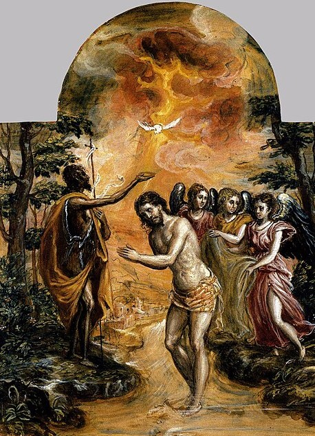
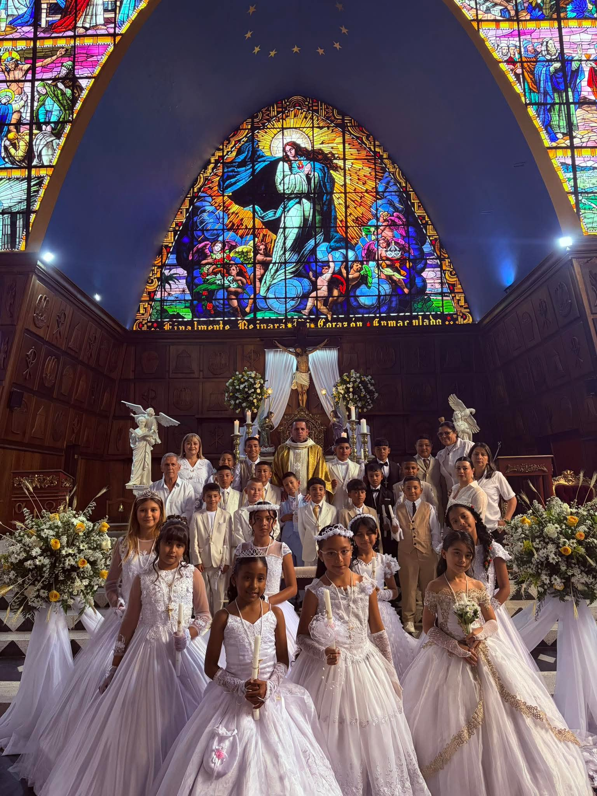
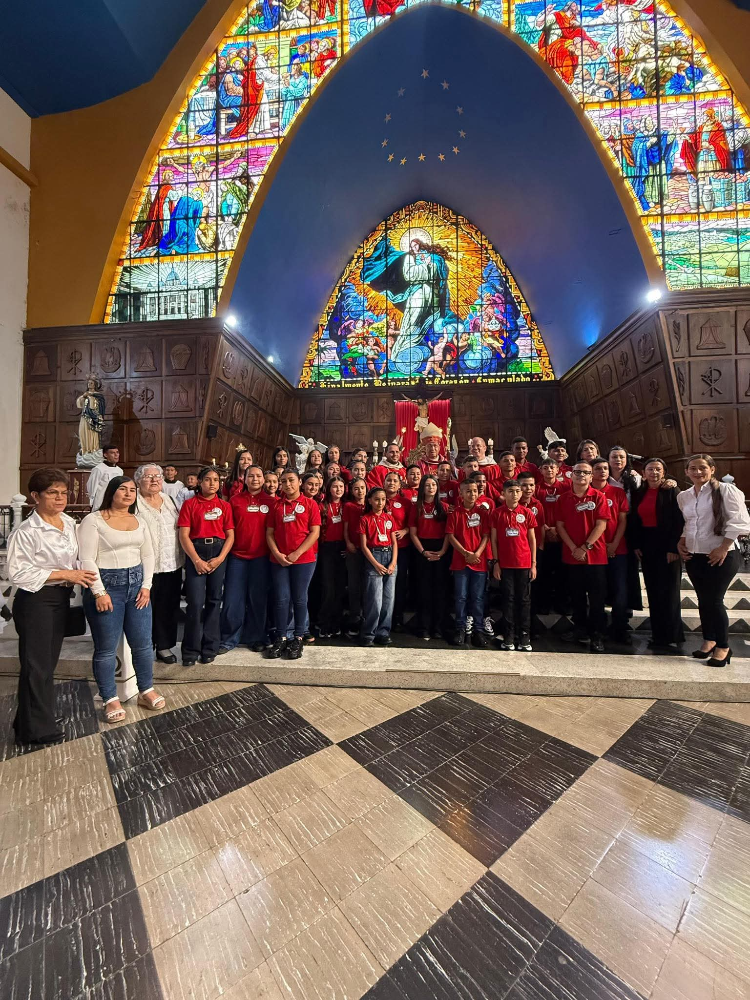
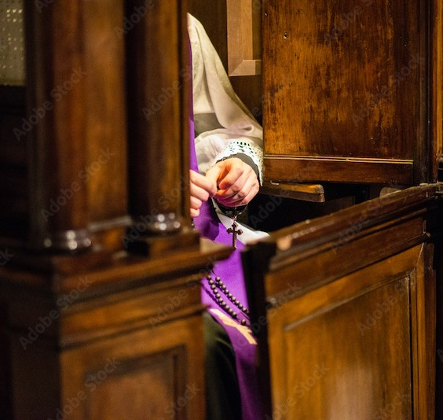
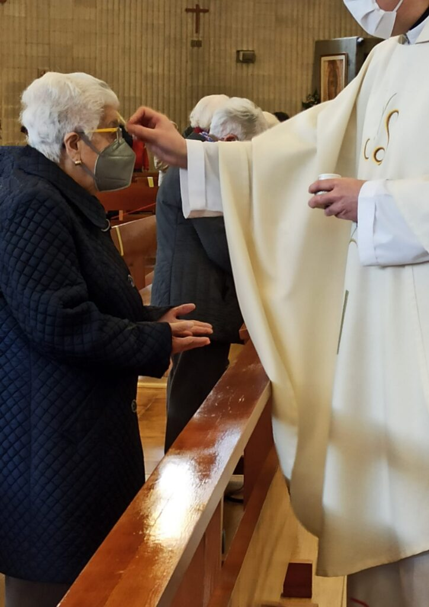

Parroquia La Inmaculada Concepción
Parroquia La Inmaculada Concepción
Parroquia La Inmaculada Concepción
Parroquia La Inmaculada Concepción
Información sobre los sacramentos en nuestra parroquia
A partir del año 2026, en la Diócesis de Cartago, se han modificado las edades y el proceso de preparación para recibir algunos de los sacramentos de iniciación cristiana (Primera Confesión, Primera Comunión y Confirmación).
Actualmente, el proceso y las edades de preparación para estos sacramentos son:
Primera Confesión:
Edad: 7 años en adelante.
Duración: 1 año.
Primera Comunión:
Edad: 8 años en adelante.
Duración: 1 año.
Confirmación:
Edad: 9 años en adelante.
Duración: 1 año.

BautismoEl bautismo es el primer sacramento de la vida cristiana. Para información sobre requisitos y preparación, comunícate con la parroquia.

ComuniónLos niños reciben catequesis para prepararse a recibir por primera vez el sacramento de la Eucaristía. Ya adultos, las personas comulgan una vez al año como minimo, así estando en plena comunion con Cristo h su Iglesia.

ConfirmaciónPreparación para jóvenes que desean fortalecer su fe y recibir el Espíritu Santo.
Las parejas deben realizar un proceso de preparación antes de celebrar el sacramento del matrimonio.

ConfesiónDisponible antes de cada misa o solicitándolo directamente en la parroquia.

Unción de los EnfermosPara personas enfermas o de edad avanzada. Puede solicitarse en la parroquia.